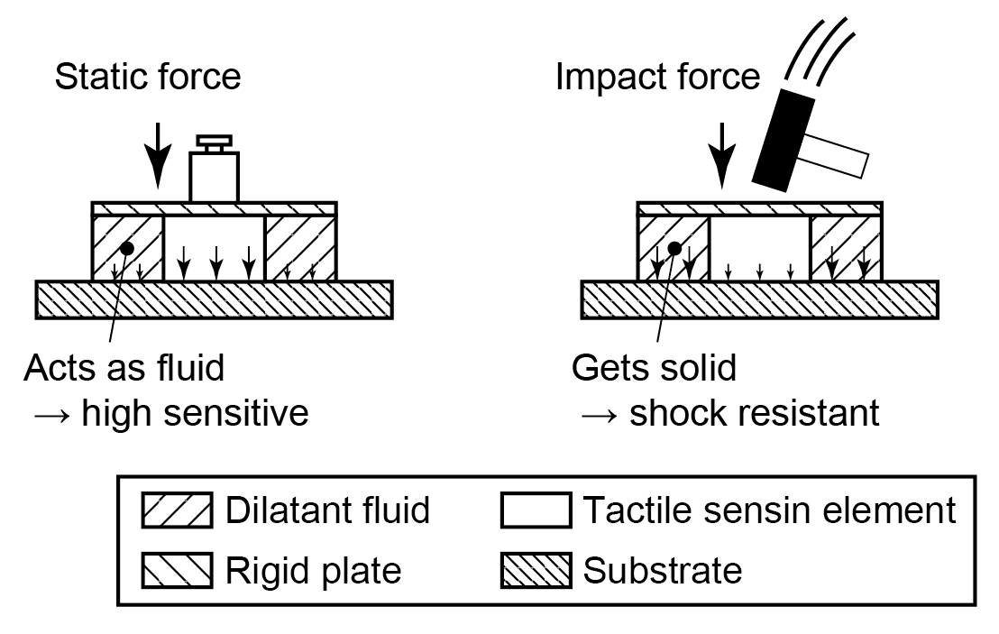

触覚センサ
ダイラタント流体を用いた触覚センサーの保護
高感度・高耐衝撃の触覚センサを実現するために、準静的な力に対しては柔らかく、撃力に対しては硬いダイラタント液でセンサ素子を覆った。準静的な力はセンサ素子に集中し、衝撃力は基板に分散する。その結果、ダイラタント流体で覆ったセンサの耐衝撃性は、覆っていない場合の4～16倍であることを実験的に示した。
Publications
- Tomoyuki Takahata, Kiyoshi Matsumoto, and Isao Shimoyama, “Impact-induced hardening package for tactile sensors using dilatant fluid,” The 27th IEEE International Conference on Micro Electro Mechanical Systems (MEMS2015), Estoril, Portugal, 18-22 January, 2015. [Proceedings]